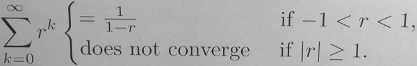

- Calculus 2
- Week1 : Sequence
- Week2 : Series
Calculus 2
Week1 : Sequence
What is a Sequence?
- 1,1,2,3,5,8,...
- a₁,a₂,a₃,a₄,a₅,a₆,...
- a₆=8, a₃=2
- we use (an) represents the whole sequence
- "arithmetic progression"
- a sequence with a common difference between the terms.
- 5,12,19,26,33,...
- an = a₀+dn
- Why are these things even called arithmetic progressions?
- Each term Is the arithmetic mean of its neighbors.
- 12 == (5+19)/2
What is the Limit of a Sequence ?
What is an Geometric Progression?
- A geometric progression, is a sequence with a common ratio between the terms.
- 3,6,12,24,...
- in a geometric progression, each term is the geometric mean of it's neighbors
- what is geometric mean ?
- the geometric mean of two numbers, of a and b, is defined to be the square root = √(a·b)
What Other Properties Might a sequence Have ?
How Do Sequences Help with the √2 ?
- x₁ =1
- xn+1 = 1/xn + xn/2
- x₂ = 3/2
- x₃ = 17/12
- x₅ ≈ 1.41421
When is a Sequence Bounded?
- an is "bounded above" means there is a real number M , so that
- for all n≥0, an ≤ M
- an is "bounded below" means there is a real number M , so that
- for all n≥0, an ≥ M
When is a Sequence Increasing?
- A sequence (an) is increaseing if whenever m > n , then am > an
- A sequence (an) is decreaseing if whenever m > n , then am < an
- A sequence (an) is non-increaseing if whenever m > n , then am ≤ an
- A sequence (an) is non-decreaseing if whenever m > n , then am ≥ an
- those 4 kind of sequence are monotone
What is the Monotone Convergence Theorem?
Here's a theorem that guarantees a sequence converges.
- If the sequence (an) is bounded and monotone, then limn→∞ an exists.
How Can the Monotone Convergence Theorem Help?
How Big Can Sequence Be ?
Is There a Sequence That Includes Every Integer?
Yes !
- 0,-1,1,-2,2,-3,3, ...
- cn=
- -(n+1)/2 , if n is odd
- n/2 , if n is even
- starting with index 0
Is There a Sequence That Includes Every Real Number between 0 and 1 ?
No!
Week2 : Series
What is a series ? A series is basically what you get when you add up the numbers in a sequence in order.
What is a Series ? What is a Geometric Series ?
What does ∑ak = L Mean ?
If limn→∞ sn = limn→∞ ∑k=ⁿ₁ ak exists and equals L , then say
∑k=ⁿ₁ ak converges.
Otherwise, say ∑k=ⁿ₁ ak diverges.
Why does ∑k=∞₀ (1/2)ᵏ = 2 ?
What is a Geometric Series?
- Geometric Series : ∑k=∞₀ rᵏ
- let sn = ∑k=n₀ rᵏ
- (1-r)sn = 1·(r⁰+r¹+...+rⁿ) - r·(r¹+r²+...+rⁿ+rn+1) = 1-rn+1
- so if r≠ 1
- sn = (1-r)sn / (1-r) = (1-rn+1 ) / (1-r)
- so limn→∞ sn = limn→∞ (1-rn+1 ) / (1-r)
- if r>1 or r<-1 , limn→∞ rn+1 is infinite
- if -1
<r<1 , limn→∞ rn+1 = 0
- if -1
- 
What is the value of ∑k=∞m rᵏ ?
- C·∑k=∞₀ rᵏ = ∑k=∞₀ C·rᵏ
- rᵐ·∑k=∞₀ rᵏ = rᵐ/(1-r) (|r|<1)
- = ∑k=∞₀ rm+k
What is a Telescoping Series ? How can I Prove That Some Series Diverge ?
What is the Sum of a Telescoping Series?
- ∑k=∞₁ 1/((k+1)·k)
= limn→∞ ∑k=ⁿ₁ (1/k-1/(k+1))
= limn→∞ ( 1-1/(n+1) ) = 1